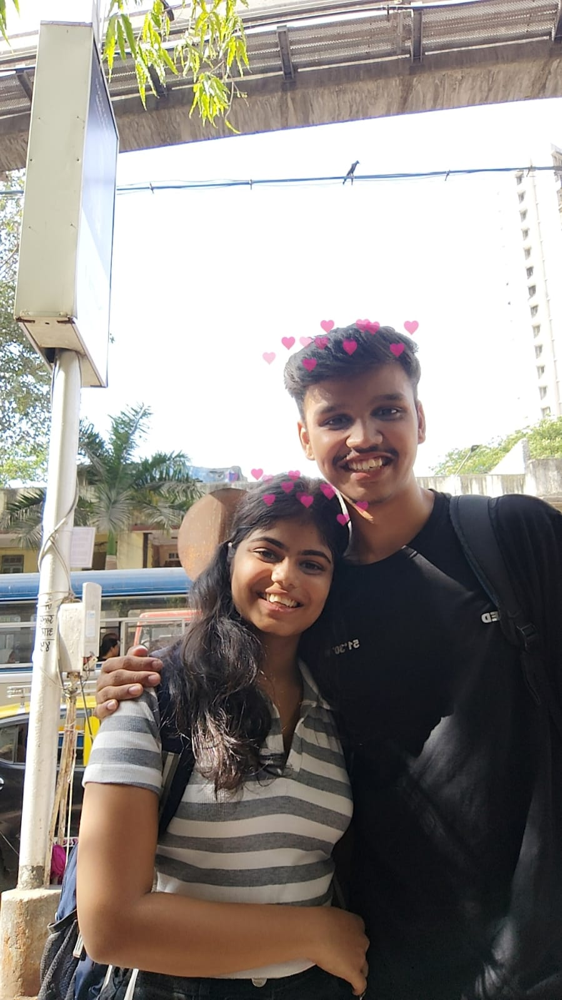
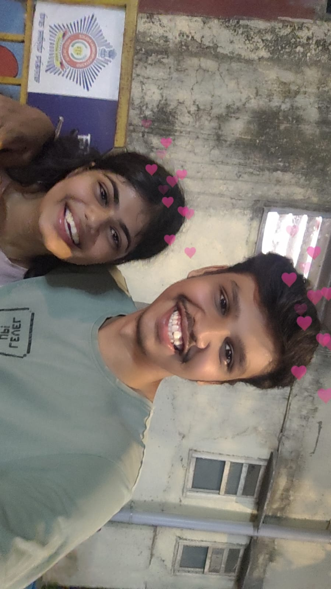
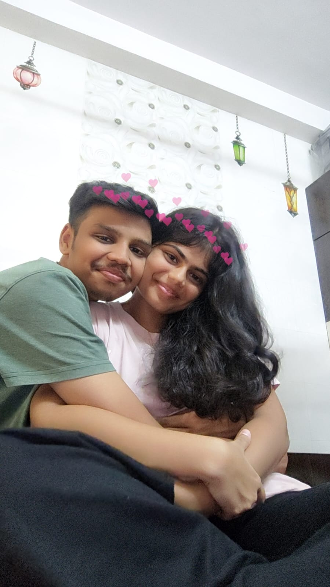
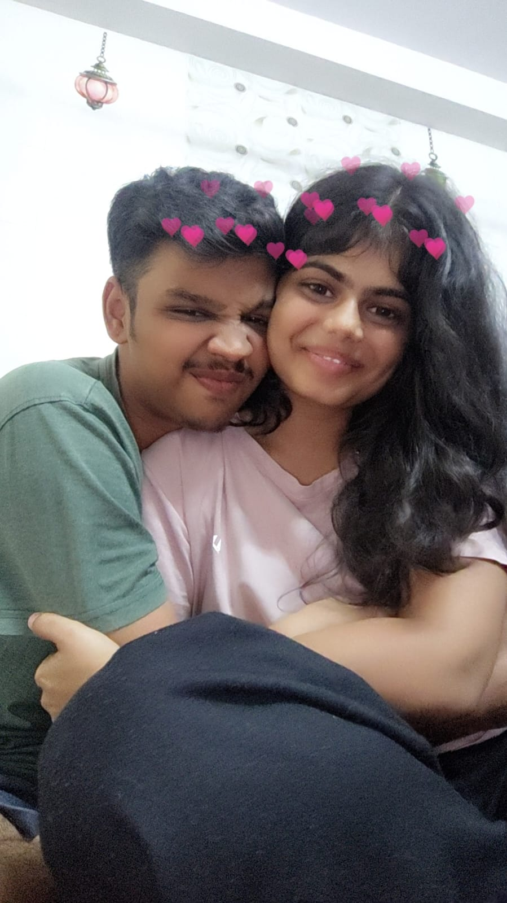
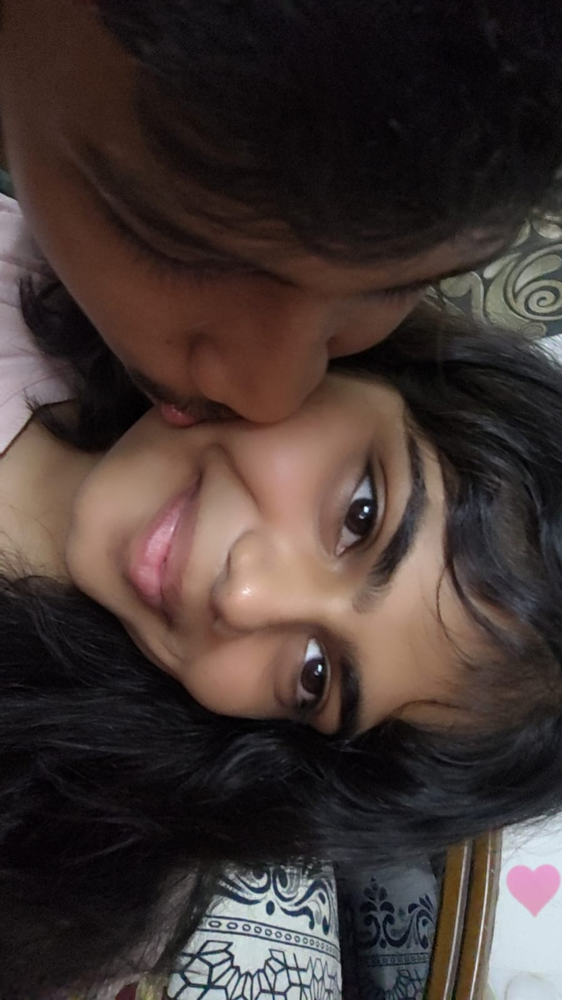
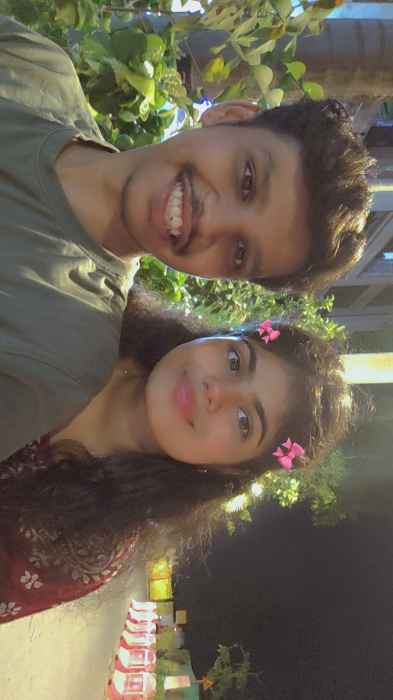
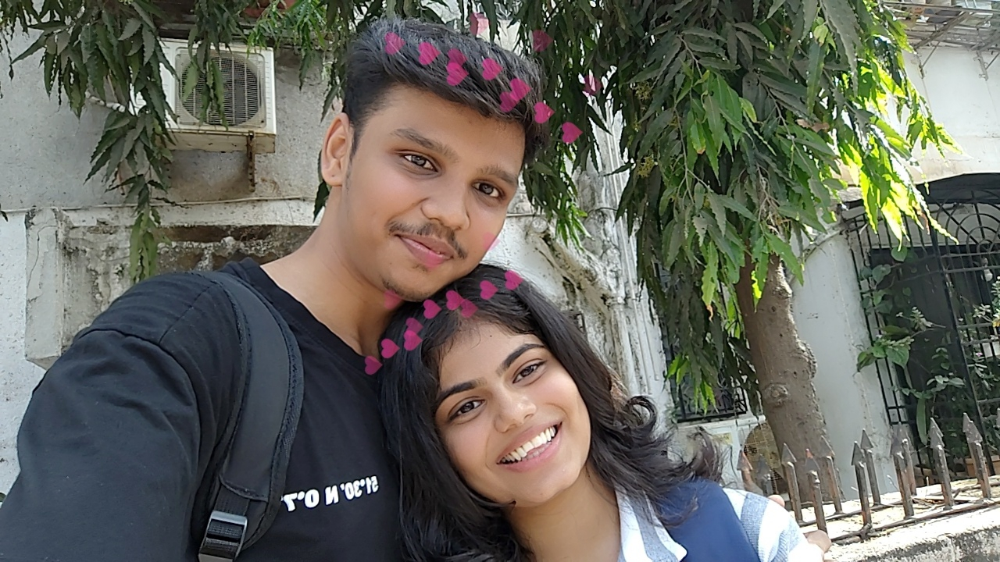

Welcome To Our Story 🌷
Every memory here is a reminder of how much you mean to me.
📸 Memory Lane

I never knew that one simple request would change so much. At the time, it felt like such a small moment, but looking back now, it became the start of one of the most important chapters of my life.

What started as ordinary conversations slowly became something I looked forward to every day. Without realizing it, you became someone whose messages could instantly make me smile.

There wasn't one specific moment when everything changed. It happened little by little. One day I realized that I cared about your day, your happiness, and the little things you shared with me.

One of my favorite things about us is the comfort I feel when talking to you. Even on difficult days, you somehow make things feel lighter without even trying.

The memories I treasure most aren't always the big ones. They're the random conversations, the jokes, the late-night talks, and the moments that became special because they were with you.

If someone had told me back then that one request would lead me here, I probably wouldn't have believed them. But today I'm grateful for every conversation, every memory, and every moment that brought us here.
🌷 Tulip Garden
Touch a flower 🌷